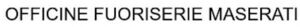

Trade Mark Journal No.2025/039 26 September 2025
WO0000001875257 (12,37,40,42)
Office of origin: Italy
Date of International Registration:17 April 2025
Date of designation in the UK:
17 April 2025

International priority date claimed: 20 March 2025
(Italy)
(302025000046350)
- Class 12
- Cars; sports cars; motor racing cars; SUV [sports utility vehicles]; robotic cars; air bags [safety devices for automobiles]; cigar lighters for automobiles; head-rests for automobile seats; automobile hoods; automobile bodies; security harness for automobile seats; spare wheel covers; hub caps; brake discs for automobiles; non-skid devices for automobiles tires; seat covers for automobiles; covers for automobiles steering wheels; brakes for automobiles; clutches for automobiles; motors, electric, for automobiles; engine for automobiles; bumpers for automobiles; ski carriers for cars; doors for automobiles vehicles; luggage nets for automobiles; automobiles wheels; rearview mirrors; safety seats for children, for automobiles; automobiles seats; side view mirrors for automobiles vehicles; spoilers for automobiles; automobile chassis; headlight wipers; windshield wipers; steering wheels for automobiles; consoles being parts for automobiles interiors; aerodynamic attachments for automobiles bodies; roof cases for automobiles; heat engines for automobiles; interior panel for automobiles; interior fittings of automobiles; seat trays adapted for use in automobiles.
- Class 37
- Automobiles conversions [engine]; repair and maintenance of automotive vehicles; custom installation of automobile interiors; providing information relating to repairs, insulation services and automobile wash; anti-rust treatment for automobiles; installation of electric and electronic equipment in automobiles; custom restoration of automobile; tuning of motors and engines for automobiles; installation of parts for vehicles.
- Class 40
- Customisation of automobiles; saddlery working; custom assembling of automobile bodies and chassis for others; providing material treatment information; metal treating; heat treatment and coating of steel; custom manufacture of automobiles; sewing of automobiles interiors; applying finishes to automobiles; custom assembly of electronic components for use in automobiles vehicles; custom assembly of lighting for automobiles; monogramming of automobiles interior trim and automobiles accessories; custom manufacture of motor vehicles.
- Class 42
- Technical research relating to automobiles; automotive research, design and development services; automotive engineering services; design of accessories for automobiles; design of the interior of automobiles; automobile diagnostic services, namely, providing interactive information concerning the status and power of automobiles via mobile phone and computer network and monitor; automobile diagnostic service, namely, providing automobile diagnostic information, automobile mileage, automobile maintenance needs, automobile diagnostic readings and diagnostic trouble codes to drivers and car dealers regarding automobile via cellular technology.
MASERATI S.P.A.
Representative: JACOBACCI & PARTNERS S.P.A., Corso Emilia 8, I-10152 TORINO, ITALY